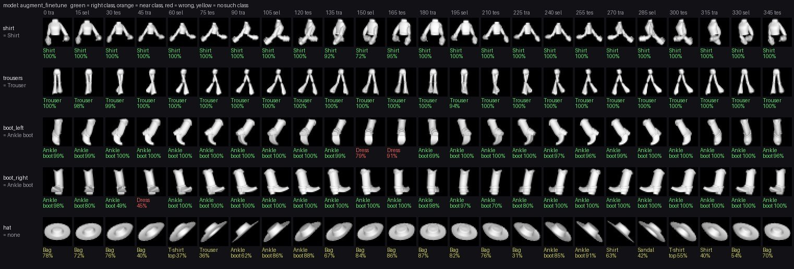
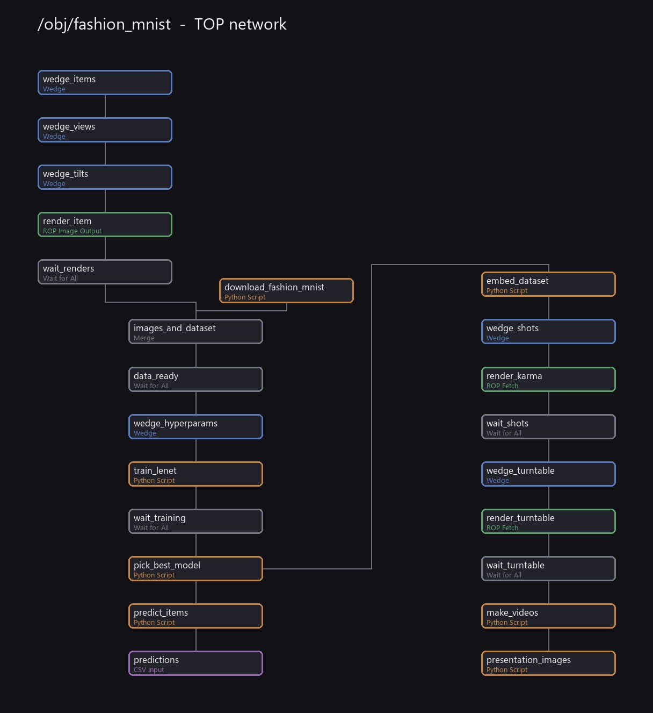
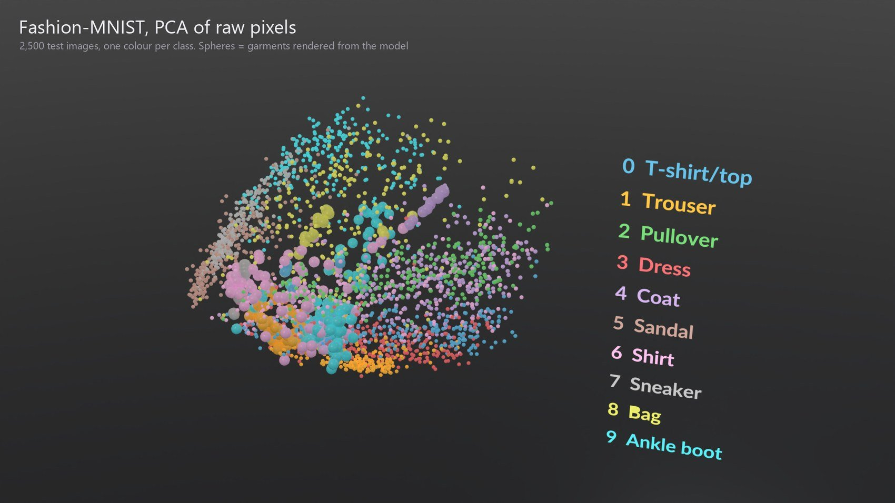
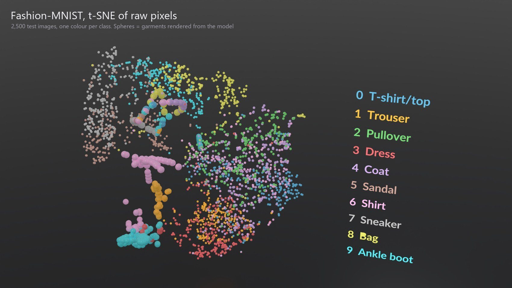
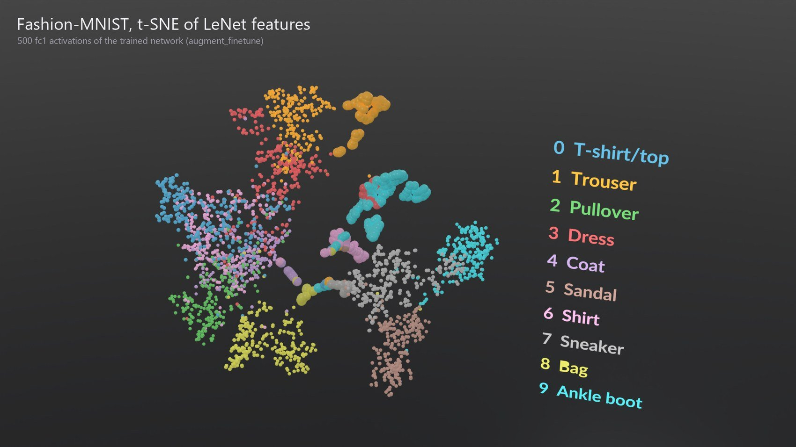

Houdini · PDG · PyTorch · Karma

Training an image classifier with a TOP network, testing it on garments rendered from a 3D character, and rendering the result in Karma.
This project rebuilds Ryan Gold’s Houdini PDG + Machine Learning MNIST setup, with two changes. The dataset is Fashion-MNIST (clothing) instead of handwritten digits, and the test images are not drawn by hand — they are rendered from the clothes of the character at /obj/new_head1/scale_x10 in minst.hip.
Everything runs as one TOP network. It renders the garments, downloads the dataset, trains the LeNet model from the Colab notebook in three versions, picks the best one, classifies the garment images, builds 3D maps of the dataset, and renders stills and a turntable in Karma.
Main result: a network trained only on Fashion-MNIST reaches 90.9% on the Fashion-MNIST test set but recognises only 14.6% of the character’s garments. Mixing renders of the garments into training raises that to 95.8% on view angles the network never saw, while its Fashion-MNIST score drops to 83.9%.
The model is one mesh. Every polygon has a usdprimpath attribute (shirt, chaps, boots, hat, and so on). /obj/fashion_items uses that attribute to keep one garment at a time. It is built only from SOP nodes and hscript expressions, with no wrangles:
item.A Copernicus network (/obj/fashion_cop) turns that shading into pixels, then box-filters it down to 28×28 grey pixels — the Fashion-MNIST format. Three chained Wedge TOPs make every combination: 5 garments × 24 yaw angles × 3 tilts = 360 images.

/obj/fashion_mnist holds the whole pipeline. Each row below is one or more TOP nodes. The machine-learning steps are Python Script TOPs. They run in a separate Python environment with PyTorch (a venv/ folder next to the hip file) — the same trick as in the reference article.
| TOP nodes | What they do |
|---|---|
| wedge_items, wedge_views, wedge_tilts | One work item per garment, yaw angle and tilt: 360 in total |
| render_item | ROP Image Output: renders each garment to a 28×28 PNG |
| download_fashion_mnist | Downloads the dataset (60,000 training and 10,000 test images) |
| wedge_hyperparams | One work item per training recipe, with learning rate and epochs |
| train_lenet | Trains LeNet, saves the weights and the accuracy numbers |
| pick_best_model | Chooses the best recipe |
| predict_items, predictions | Classifies all 360 images, then makes one work item per image |
| embed_dataset | PCA and t-SNE maps of the dataset in 3D |
| wedge_shots, render_karma | Four Karma stills |
| render_turntable, make_videos | 60-frame Karma turntable and two mp4 clips |
| presentation_images | Adds titles to the stills and draws the network diagram |
Clicking a work item of predictions shows that garment in the viewport with its predicted label. The label comes from the work item attributes — the same idea as the Font node in the original MNIST setup.

The model is the LeNet from the Colab notebook: two 5×5 convolution layers (20 and 50 filters) with max pooling, a 500-unit layer with dropout, and 10 outputs. It trains for 5 epochs with Adam at a learning rate of 0.001, on CPU.
Why three recipes? The first version trained only on Fashion-MNIST and failed on the garments. The character is in a walking pose, its boots are tall cowboy boots, and nothing in Fashion-MNIST looks like that. So the hyperparameter wedge compares three recipes:
Keeping the test honest. The garment images are split by yaw angle. Angles 0, 45, 90… are used for training, 15, 60, 105… for choosing the model, and 30, 75, 120… only for the final score. The hat is left out of the score because Fashion-MNIST has no hat class.
| Recipe | Dataset test | Garment test | Shirt | Trousers | Boot L | Boot R |
|---|---|---|---|---|---|---|
| baseline | 90.9% | 14.6% | 12.5% | 20.8% | 0.0% | 25.0% |
| augment | 84.8% | 25.0% | 0.0% | 25.0% | 0.0% | 75.0% |
| augment_finetune (picked) | 83.9% | 95.8% | 100.0% | 100.0% | 87.5% | 95.8% |
Accuracy on the 96 garment test images (4 garments × 8 angles × 3 tilts) and on the 10,000 Fashion-MNIST test images.
What the numbers say:
One limit: the test images are new angles of the same five garments, not new garments. The score shows the network learned this character’s clothes. It does not show it would recognise clothes from another model.
Following Christopher Olah’s Visualizing MNIST, embed_dataset turns each image into a point in 3D, so similar images land close together. 2,500 Fashion-MNIST test images (250 per class) and the 360 garment renders go into the same map. The CSV files it writes are read by Table Import SOPs in /obj/fashion_embedding, where a Switch chooses the map.



The renders come from a small Solaris network (/stage/fm_*). A work item attribute, shot, picks the geometry and the camera, so the TOP network renders all shots from one Karma node.
Two short clips sit next to the stills: embedding_turntable.mp4 (2.5 s, the feature-space map turning) and garment_predictions.mp4 (3 s, the 28×28 garment images turning with their predicted label).
| File | Contents |
|---|---|
| fashion_mnist.hip | minst.hip plus the new nodes. minst.hip itself is unchanged |
| scripts/build_fashion_mnist.py | Rebuilds every node. Can also run inside an open session |
| scripts/cook_fashion_mnist.py | Cooks the TOP network without the interface |
| scripts/fm_*.py | The code inside the Python Script TOPs |
| ml/recipe_comparison.csv | The accuracy table above |
| ml/predictions.csv | One row per garment image |
| ml/jessie_fashion_mnist.npz | The 360 garment images as an MNIST-style array |
| render/presentation/ | Stills, turntable frames, videos and the network diagram |
To cook everything, open fashion_mnist.hip and cook presentation_images in /obj/fashion_mnist. Finished training runs are reused; delete ml/models to train again.
Known gaps:
fashion_mnist.hip. They were not added to the open minst.hip session.References: